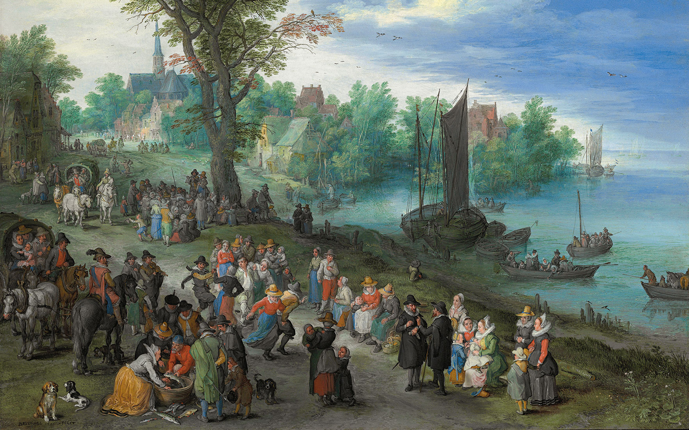
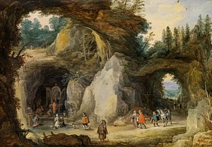
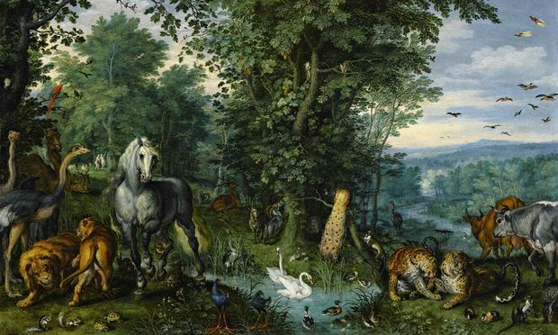
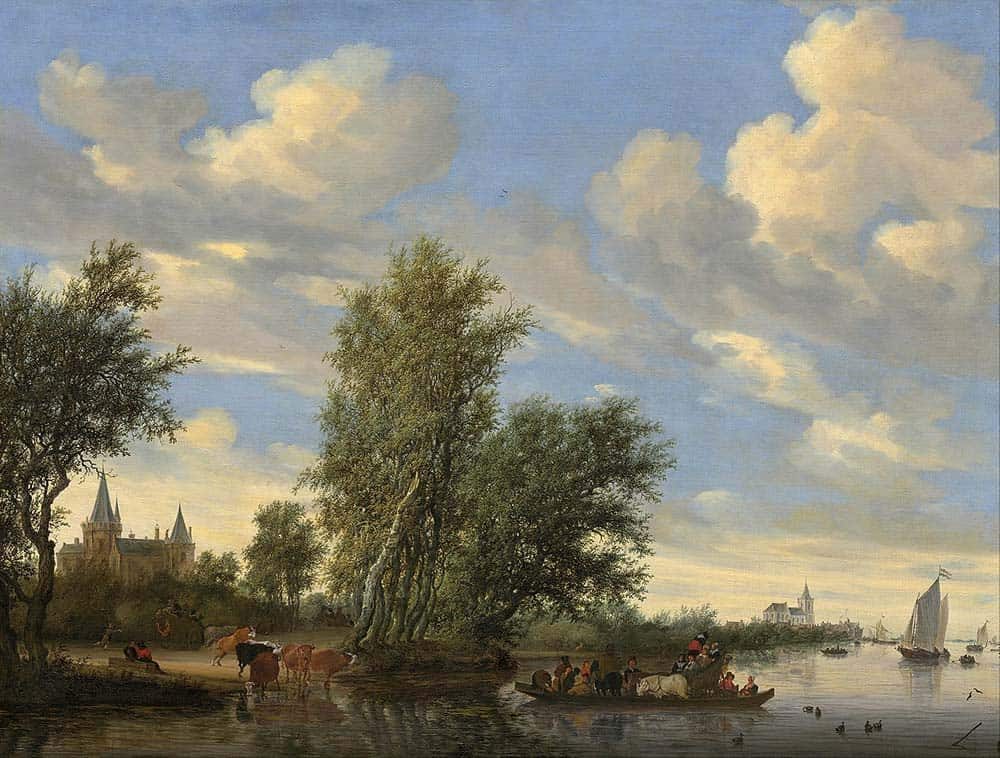
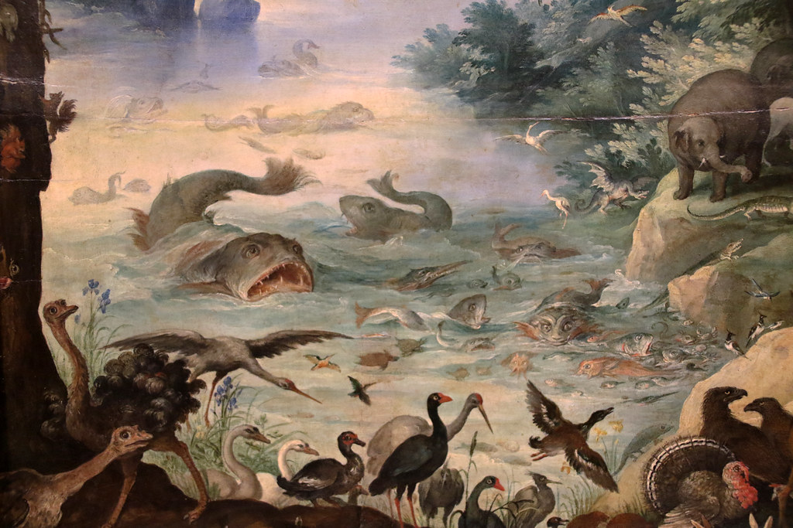
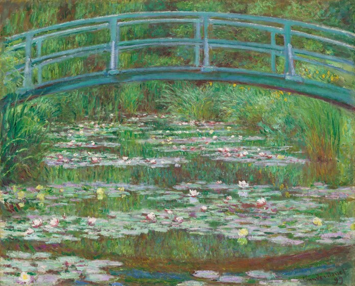
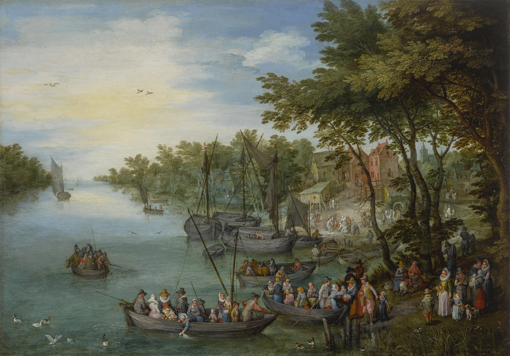

WELCOME







The National Gallery in London is one of the prominent art museums in the United Kingdom. The major art museum in London is the National Gallery, which houses an extensive collection of Western European paintings from the 13th to the 19th centuries.The National Gallery is located in the heart of London. It showcases iconic works of art by renowned artists such as Leonardo da Vinci, Vincent van Gogh, Rembrandt, Michelangelo, and many others. The museum offers visitors a chance to explore the development of Western art through its diverse collection of paintings, sculptures, and other artistic expressions.